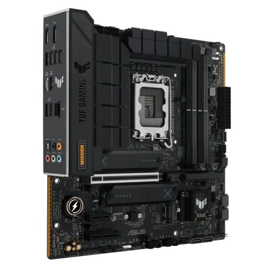

Placa base
La placa base es uno de los componentes más importantes a la hora de montar un ordenador. A esta pieza se conecta la memoria RAM, la CPU, los discos duros y la fuente de alimentación, elementos esenciales para que un ordenador funcione a pleno rendimiento.
Caracterisiticas
- Marca y Socket de procesador compatible: Intel 14th gen, 13th gen y 12th gen
- Memoria compatible: Modulos DDR4 y DDR5
- Almacenamiento: M.2 SSD
- Formato: Micro ATX
- Depende del modelo puede haber modulo WI-FI o no, en este caso no hay
Precio
210.99 en PcComponentes